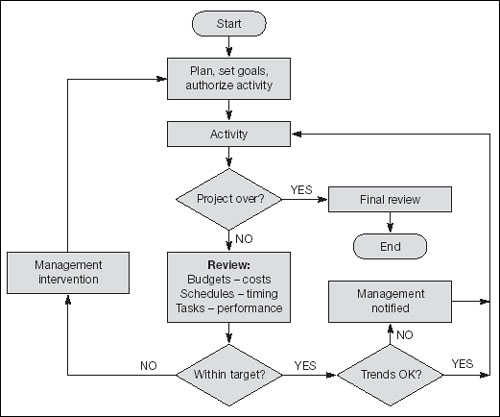

It might be clear from the foregoing that the secret of successful project management is in the planning. Isn’t this always the way. Once the project is running:
Measure the progress of each step against the predetermined milestones according to a set time schedule.
Proceed automatically to the next step if nothing is awry.
If the results at any stage are outside of the predetermined range of acceptable values, intervene immediately.
You need to do two things as each checkpoint is reached. The first is to ensure that an exception report is triggered if any actual figure is outside the predefined acceptable range (management by exception – don’t tell me what’s right, tell me what’s wrong) – in which case management intervention should be immediate. You can then reassess the plan, implement corrective action, approve new goals, etc. The second is to check the trend. For example, if one category of spending is moving a little closer to the upper limit each month, this might be an early warning signal that the limit is about to be breached. This is so important, that the next chapter is devoted to it.